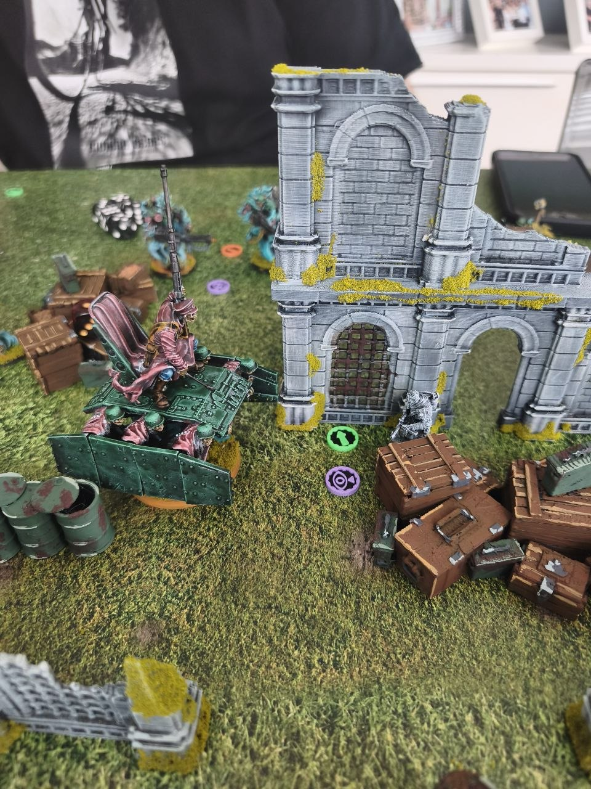
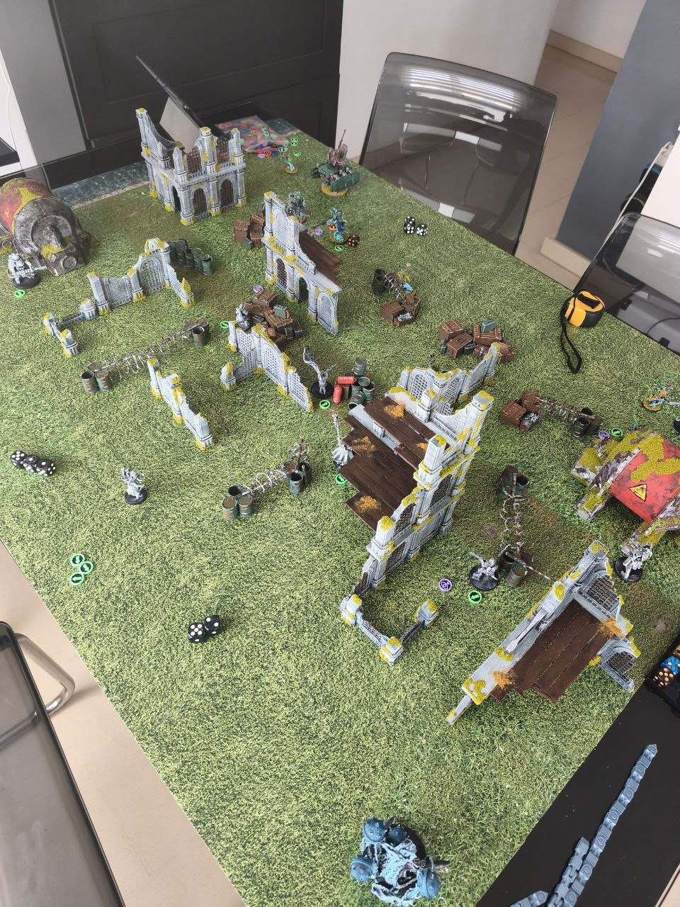
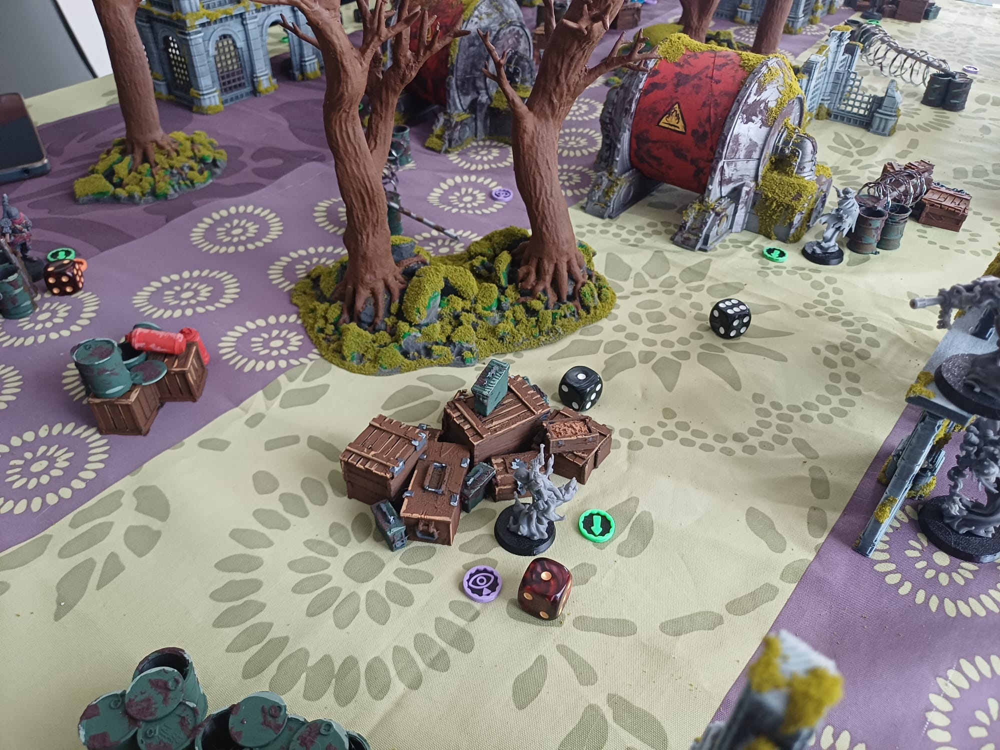
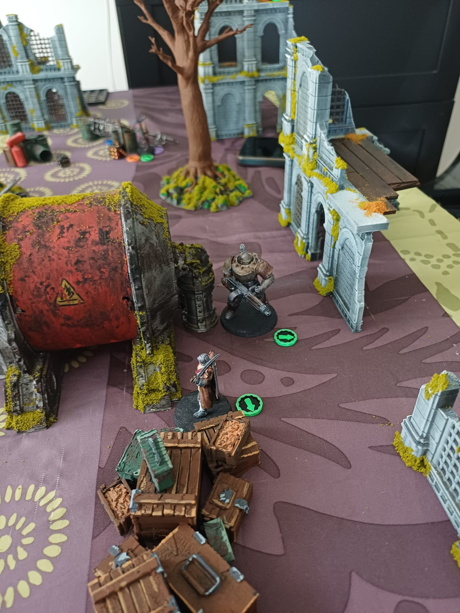

Eventos y Partidas
Encuentros y partidas de Trench Crusade para disfrutar del juego y conocer a otros jugadores de Valencia.

Bienvenido a Sons of Heroes, un club dedicado a Trench Crusade en Valencia. Organizamos partidas, campañas narrativas, ligas, eventos y encuentros para jugadores de todos los niveles en la Comunidad Valenciana.
Sons of Heroes nace con el objetivo de reunir a jugadores de Trench Crusade y aficionados a los wargames en Valencia y la Comunidad Valenciana. Queremos crear un espacio donde disfrutar del juego, conocer nuevos jugadores y desarrollar campañas y partidas con una fuerte ambientación narrativa.
Tanto si estás descubriendo Trench Crusade como si ya tienes experiencia sobre la mesa de juego, aquí encontrarás partidas, campañas, eventos, ligas y recursos para disfrutar del universo del juego.
Trench Crusade es un juego de miniaturas de fantasía oscura ambientado en una Primera Guerra Mundial alternativa, donde la humanidad combate contra fuerzas demoníacas en una guerra santa interminable.
El juego combina miniaturas, estrategia, escenografía y una ambientación oscura y narrativa que permite desarrollar partidas y campañas llenas de historias propias.
En Sons of Heroes queremos llevar esta experiencia a las mesas de juego de Valencia, creando una comunidad activa de jugadores de Trench Crusade.
Encuentros y partidas de Trench Crusade para disfrutar del juego y conocer a otros jugadores de Valencia.
Temporadas, clasificaciones y partidas competitivas para quienes quieran llevar sus bandas al campo de batalla.
Campañas de Trench Crusade donde cada partida forma parte de una historia y las decisiones de los jugadores tienen consecuencias.
Mesas de juego, escenografía e impresión 3D para crear campos de batalla ambientados en el universo de Trench Crusade.
Muy pronto anunciaremos nuestra primera partida abierta de Trench Crusade en Valencia.
Estamos preparando una colección de escenografía para crear mesas de juego completas para nuestras partidas y campañas.
Buscamos nuevos jugadores interesados en Trench Crusade y los wargames. No importa si estás empezando o ya tienes experiencia.
Algunas imágenes de nuestras batallas, campañas, miniaturas y mesas de juego de Trench Crusade en Valencia.



